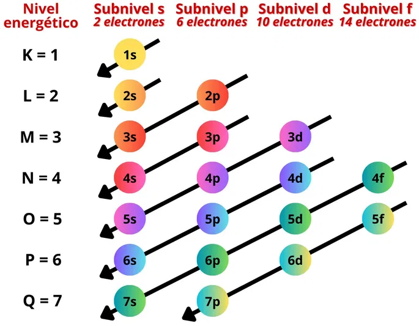
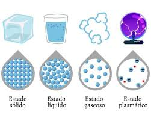

1. Historia de la Tabla Periódica
La tabla periódica es uno de los mayores logros de la química. En 1869, Dmitri Mendeléyev propuso un diseño donde los elementos se ordenaban por sus propiedades y masas atómicas, lo que le permitió predecir elementos que aún no se descubrían. Décadas después, Henry Moseley reorganizó la tabla usando el número atómico, lo que explicó por qué algunos elementos no encajaban antes. Hoy, la tabla periódica es fundamental para entender la química, clasificar los elementos y estudiar sus propiedades.
Video recomendado: Evolución de la Tabla Periódica
2. ¿Qué es la Configuración Electrónica?
La configuración electrónica muestra cómo se distribuyen los electrones en un átomo. Los electrones ocupan niveles y subniveles de energía en un orden específico, determinado por el principio de Aufbau, el principio de exclusión de Pauli y la regla de Hund. Por ejemplo, el oxígeno tiene la configuración 1s² 2s² 2p⁴. Esta información es clave para entender la química de los elementos, sus enlaces y su comportamiento en las reacciones.
¿Por qué es importante?
La configuración electrónica explica la reactividad, los enlaces químicos y la posición del elemento en la tabla periódica. Los elementos con configuraciones similares suelen estar en el mismo grupo y compartir propiedades.
3. Iones: Aniones y Cationes

¿Qué son los iones?
Los iones son átomos o grupos de átomos que ganan o pierden electrones. Al hacerlo, adquieren una carga eléctrica. Los iones son esenciales en la formación de compuestos iónicos y en procesos biológicos como la conducción nerviosa.
Cationes
Son átomos que han perdido uno o más electrones, adquiriendo carga positiva. Los metales suelen formar cationes. Ejemplo: Na⁺, Ca²⁺.
Aniones
Son átomos que han ganado uno o más electrones, adquiriendo carga negativa. Los no metales suelen formar aniones. Ejemplo: Cl⁻, O²⁻.
4. La Materia y sus Estados
La materia es todo aquello que tiene masa y ocupa espacio. Según la disposición y energía de sus partículas, la materia puede estar en diferentes estados:
Sólido
Las partículas están muy juntas y ordenadas. Tienen forma y volumen fijos. Ejemplo: el hielo.
Líquido
Las partículas están juntas pero pueden moverse unas sobre otras. Tienen volumen fijo pero forma variable. Ejemplo: el agua.
Gas
Las partículas están muy separadas y se mueven libremente. No tienen forma ni volumen fijos. Ejemplo: el oxígeno del aire.
Plasma
Un gas a alta temperatura donde las partículas están ionizadas. Presente en las estrellas y rayos.
Condensado de Bose-Einstein
Estado que se forma a temperaturas cercanas al cero absoluto. Las partículas se comportan como una sola entidad cuántica.
5. Estructura Atómica
El átomo es la unidad básica de la materia y está formado por:
Núcleo
Contiene protones (carga positiva) y neutrones (sin carga). Ocupa una mínima parte del volumen del átomo pero concentra casi toda su masa.
Electrones
Partículas con carga negativa que se mueven alrededor del núcleo en niveles de energía. Su distribución determina las propiedades químicas del elemento.
Modelos Atómicos
Desde el modelo de Dalton hasta el modelo cuántico actual, la idea del átomo ha evolucionado para explicar mejor su comportamiento.
6. Historia de la Química
La química surgió a partir de la alquimia, una práctica antigua que mezclaba ciencia y magia. Con el tiempo, la observación y la experimentación se volvieron fundamentales.
Siglos XVII y XVIII
Robert Boyle destacó la importancia del método científico. Antoine Lavoisier formuló la ley de conservación de la masa, considerada el inicio de la química moderna.
Siglo XIX
Se desarrolló la tabla periódica y las teorías atómicas. La química orgánica comenzó a estudiarse con profundidad.
Actualidad
La química es esencial en la medicina, la industria, la nanotecnología y muchos otros campos.
7. Clasificación de los Elementos
Metales
Buenos conductores de electricidad y calor, maleables y brillantes. Ejemplos: hierro, cobre.
No Metales
Pobres conductores, suelen ser gases o sólidos frágiles. Ejemplos: oxígeno, carbono.
Metaloides
Propiedades intermedias. Son semiconductores. Ejemplos: silicio, arsénico.
Grupos y Periodos
Los grupos (columnas) agrupan elementos con propiedades similares. Los periodos (filas) muestran el número de niveles de energía.
Importancia
La tabla periódica permite predecir el comportamiento químico, la formación de compuestos y la reactividad de los elementos.